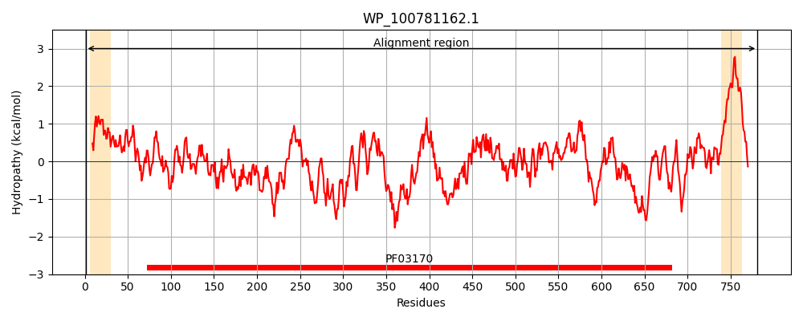
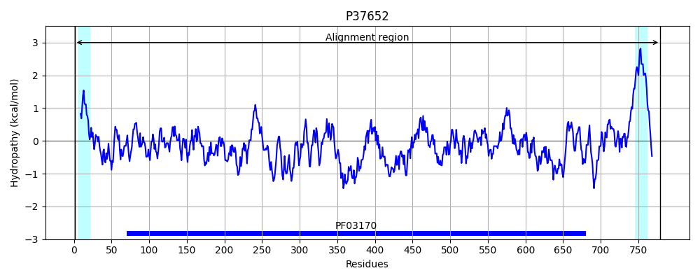
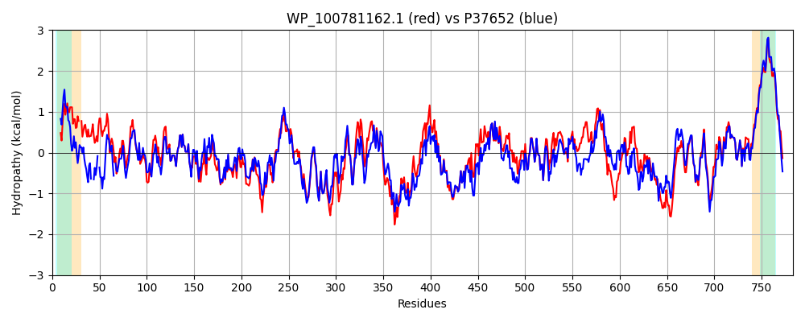

Hit Accession: P37652
Hit TCID: 4.D.3.1.6
Hit Description: gnl|BL_ORD_ID|10122 gnl|TC-DB|P37652|4.D.3.1.6 Cyclic di-GMP-binding protein OS=Escherichia coli (strain K12) GN=bcsB PE=1 SV=2
Mach Len: 783
e:0.000000
Query TMS Count : 2
Hit TMS Count: 2
TMS-Overlap Score: 1.750000
Predicted Substrates:CHEBI:3529;(1->4)-beta-D-glucan
BLAST Alignment:
Score: 3026 , Bit scores: 1170 bits, E-value: 0.0e+00, Alignment length: 783, Percentage identity: 73
Query: 1 MKRKLSWMCAVAVGMCSWYPLASYAAPAV--VANAAPGVQPQVATPGAPIVVGEPTAALAEPTAPAAVAENVPQREVKLTFATIAPPPGSIVLRGSRPDASVEFGMRSDELVANALLNLEYTPSPSLLPVQSQLKVYLNDELMGVLPVTKEQLGKKIRAQLPIDPLYITDFNRVRLEFVGHYRDVCENPASSTLWLDVGRESYLDLTYQSLKVHNDLSHFPVPFYDPRDNRPLTLPMIFPGSPAVAQQQAAAIVASWFGSKAGWRGQQFPVYFNELPDRNAIVFATNDKRPDFLRDHPPVKAPTIEMIDNPNDPYVKLLVIFGRDDNDLLLAAKGIAQGNILFRGSSVTVDGIKTLQPRQPYDAPNWVRTDRSVTFAELKTYEQQLQSSGLVPDAITVALNLPPDLYLLRANGIDMDLKYRYTMPPVKDSSRMDISLNDQFLQSFSLNSAQDVNKLILRLPVLQGLLDGKSEVTIPALRLGAVNQLRFDFQFMNPMPGGSIDNCITFQPVQNHVVIGDDSTIDFSKYYHFIALPDLRVFANAGFPYSRMADLSDTLVVVPKAPTQGQVATLLQALGGIGSQTGLAAINLQMTDDGNQIKNKDADLLLIGAIPSSLKDDTKINLLVEATKSWVKMPMRHYDLASIYPDDDARTPNTRTDITSSGPMAAVIGFQSPYNDQRSVVALLADSPRGNELLTNALNDSGKRAAMFGSVAVIRESGVNSLRVGDIYYVGHLPWFERIWFALSNHPILLAIFAAISIVLLAWVLWRMLRIISRRRLSLDDE 781
MKRKL W+CAVA+GM ++ + A PA + NA P V Q T P VG+ + AP VA+N P R+VKLTFA IAPPPGS+VLRG P+ S+EFGMRSDE+V A+LNLEYTPSPSLLPVQSQLKVYLNDELMGVLPVTKEQLGKK AQ+PI+PL+I+DFNRVRLEFVGHY+DVCE PAS+TLWLDVGR S LDLTYQ+L V NDLSHFPVPF+DP DNR TLPM+F G+P V QQA+AIVASWFGS++GWRGQ FPV +N+LPDRNAIVFATNDKRPDFLRDHP VKAP IEMI++P +PYVKLLV+FGRDD DLL AAKGIAQGNILFRG SV V+ +K L PR+PYDAPNWVRTDR VTF ELKTYE+QLQSSGL P AI V+LNLPPDLYL+R+ GIDMD+ YRYTMPPVKDSSRMDISLN+QFLQSF+L+S Q+ N+L+LR+PVLQGLLDGK++V+IPAL+LGA NQLRFDF++MNPMPGGS+DNCITFQPVQNHVVIGDDSTIDFSKYYHFI +PDLR FANAGFP+SRMADLS T+ V+PKAP + Q+ TLL +G IG+QTG AINL +TDDG+ I+ KDAD+++IG IP LKDD +I+LLV+AT+SWVK PMR I PD+ R TR+ +TSSG MAAVIGFQSPYNDQRSV+ALLADSPRG E+L +A+NDSGKRA MFGSVAVIRESG+NSLRVGD+YYVGHLPWFER+W+AL+NHPILLA+ AAIS++LLAWVLWR+LRIISRRRL+ D+E
Sbjct: 1 MKRKLFWICAVAMGMSAFPSFMTQATPATQPLINAEPAVAAQ--TEQNP-QVGQVMPGVQGADAPV-VAQNGPSRDVKLTFAQIAPPPGSMVLRGINPNGSIEFGMRSDEVVTKAMLNLEYTPSPSLLPVQSQLKVYLNDELMGVLPVTKEQLGKKTLAQMPINPLFISDFNRVRLEFVGHYQDVCEKPASTTLWLDVGRSSGLDLTYQTLNVKNDLSHFPVPFFDPSDNRTNTLPMVFAGAPDVGLQQASAIVASWFGSRSGWRGQNFPVLYNQLPDRNAIVFATNDKRPDFLRDHPAVKAPVIEMINHPQNPYVKLLVVFGRDDKDLLQAAKGIAQGNILFRGESVVVNEVKPLLPRKPYDAPNWVRTDRPVTFGELKTYEEQLQSSGLEPAAINVSLNLPPDLYLMRSTGIDMDINYRYTMPPVKDSSRMDISLNNQFLQSFNLSSKQEANRLLLRIPVLQGLLDGKTDVSIPALKLGATNQLRFDFEYMNPMPGGSVDNCITFQPVQNHVVIGDDSTIDFSKYYHFIPMPDLRAFANAGFPFSRMADLSQTITVMPKAPNEAQMETLLNTVGFIGAQTGFPAINLTVTDDGSTIQGKDADIMIIGGIPDKLKDDKQIDLLVQATESWVKTPMRQTPFPGIVPDESDRAAETRSTLTSSGAMAAVIGFQSPYNDQRSVIALLADSPRGYEMLNDAVNDSGKRATMFGSVAVIRESGINSLRVGDVYYVGHLPWFERVWYALANHPILLAVLAAISVILLAWVLWRLLRIISRRRLNPDNE 779 | Protein Hydropathy Plots: |
|---|
|  |  |
Pairwise Alignment-Hydropathy Plot:
|
|---|
|  |